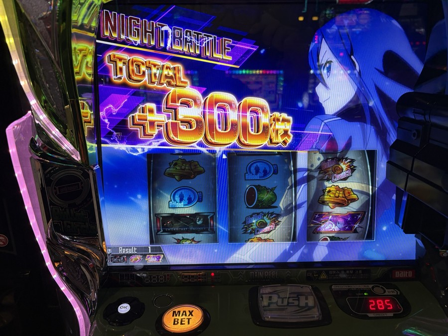
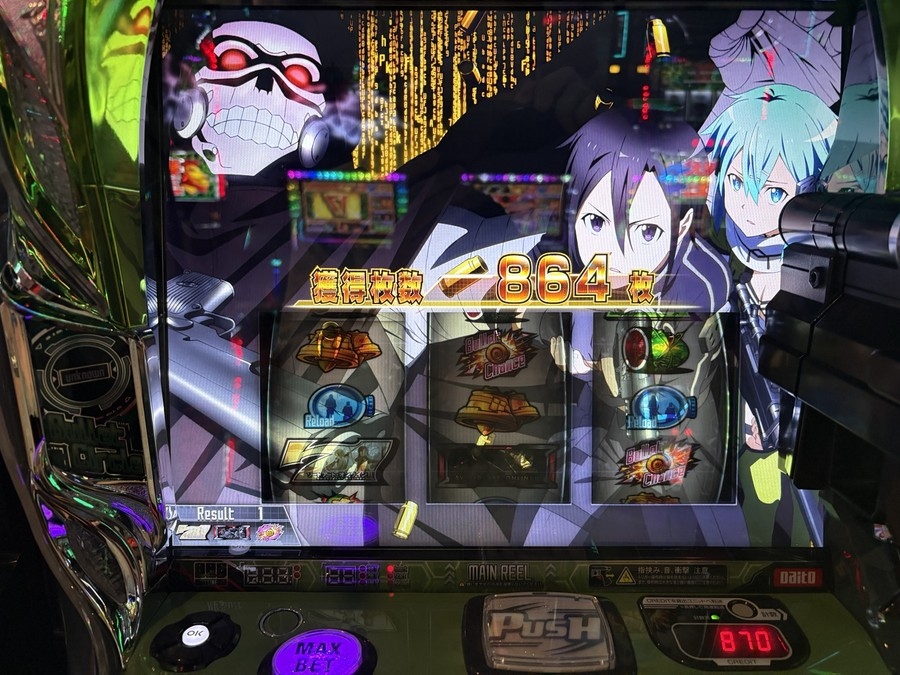
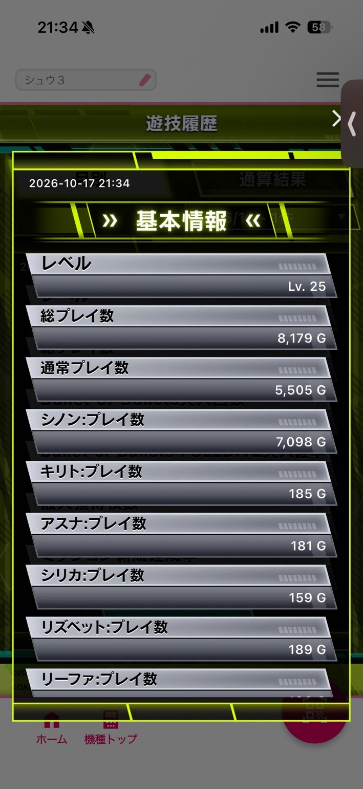
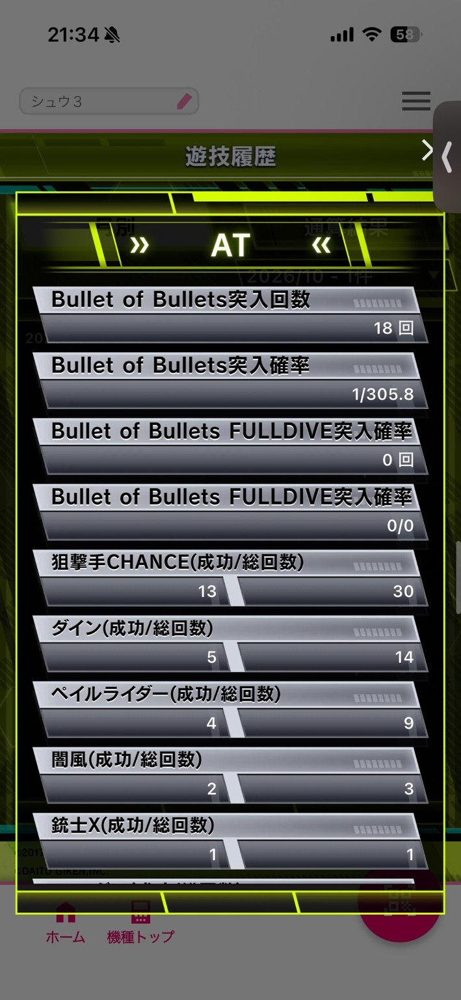
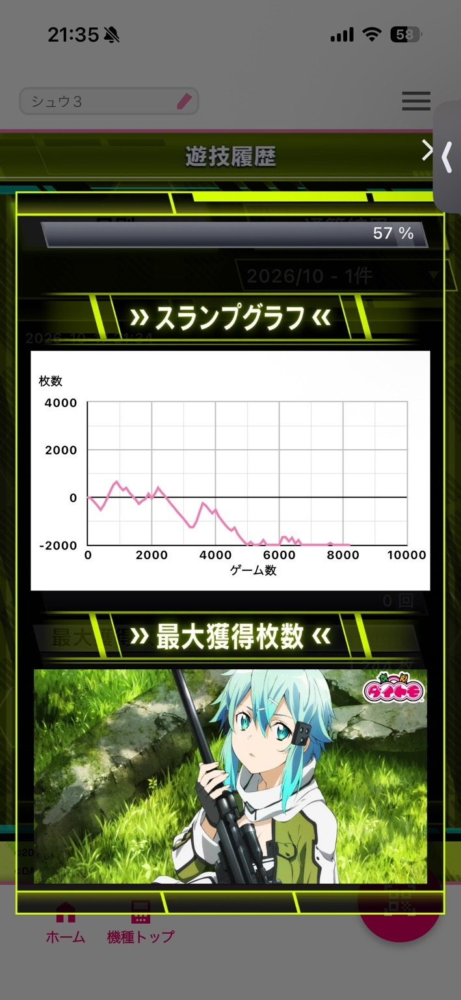

機種別実戦記録
SAO2実戦｜8,179Gで−2,938枚。当てても伸ばせず、唯一のデスガンバトルも届かず
2026年10月17日のSAO2実戦。総8,179G・通常5,505G、投資2,938枚・回収0枚。AT18回の内訳、狙撃チャンス13/30回と唯一のデスガンバトル、設定の見立てを振り返ります。
結果：投資2,938枚、回収なし
今回はSAO2を総8,179G。CZ成功や引き戻しでATにつなげながら、まとまった出玉を残せず、投資2,938枚・回収なしで終了しました。
設定の感触は「偶数寄りで、2か4。あって4」。ただし、これは実戦を終えた時点の見立てであり、設定が確認できたわけではありません。
| 項目 | 結果 |
|---|---|
| 投資 | 2,938枚 |
| 回収 | 0枚 |
| 収支 | −2,938枚 |
| 総プレイ数 | 8,179G |
| 通常プレイ数 | 5,505G |
| CZ | 23回／成功13回 |
| AT突入 | 18回（引き戻し3回を含む） |
| アプリ表示の最大獲得枚数 | 1,244枚 |
投資・回収は本人の記録、ゲーム数と回数は終了後のダイトモ画面によります。最大獲得1,244枚は持ち帰った枚数ではありません。収支は投資と回収から計算しています。
ATにはつながる。それでも出玉を残せない
最初のCZは287G・497pt、7発で失敗してアイテムを獲得。次の32Gはバレット契機のCZで9発成功、さらに11Gで引き戻しました。
その後も、バレットやポイント契機のCZ、シューティングチャージ中の図柄揃いからATへ。引き戻しは11G・8G・47Gの計3回でした。
最終的なAT18回は、CZ成功13回、シューティングチャージ中の図柄揃い2回、引き戻し3回に分かれます。メモから数えた内訳は、アプリの18回と一致しました。
ただ、当選回数と出玉の伸びは別でした。本人の振り返りでは、駆け抜けが多く、AT中の弱役からの上乗せもほとんど感じられない展開。シノンアタックやナイトバトルで上乗せしても、大きな流れにはつながりませんでした。

タップして拡大 ↗狙撃チャンス30回、成功13回。ようやく届いた上位CZ
| 項目 | 今回の記録 |
|---|---|
| 狙撃手CHANCE | 成功13回／30回（43.3％） |
| シノンアタック | 2回／最大上乗せ300枚 |
| ナイトバトル | 5回／最大上乗せ380枚 |
| DEATH GUN BATTLE | 成功0回／1回 |
シノンアタックで＋300枚、ナイトバトルで＋380枚という場面はありました。それでも、その上乗せを次の大きな展開へつなげられず。
終盤、116G・225ptのCZを8発で成功させたATでは、2セット目へ進み、ナイトバトルで＋300枚。ようやくこの日唯一のデスガンバトルまで届きました。
しかし、結果は突破ならず。この場面の終了画面は獲得864枚でした。なお、狙撃手CHANCEの対戦相手として記録された「デス・ガン」は成功1回／3回で、上位CZのデスガンバトル0回／1回とは別集計です。

タップして拡大 ↗設定の感触は「あって4」。初当たりの数え方には注意
| 項目 | 今回の値 | 集計条件 |
|---|---|---|
| CZ突入 | 1/239.3 | 通常5,505G÷23回 |
| AT突入 | 1/305.8 | 通常5,505G÷18回、引き戻し込み |
| 引き戻しを除くAT当選 | 1/367.0 | 通常5,505G÷15回、参考値 |
| 強チャンス目B | 1/1,022.4 | 総8,179G÷8回 |
ATは引き戻し込みなら軽く見えます。一方、引き戻しを除いた当選は15回。公表されている初当たり確率との比較では、引き戻しとゲーム数の集計条件を揃える必要があり、1/305.8だけを高設定の根拠にはしません。
CZの1/239.3は、ガイド掲載の設定1の値である1/238.4とほぼ同水準。強チャンス目Bも、高設定を強く後押しする結果ではありませんでした。
終了画面はソファーだけでなく制服も確認。偶数寄りという感触は残るものの、奇偶を決め切れる記録ではありません。木漏れ日の高設定示唆もありましたが、設定確定とは分けて考えます。
「6はなさそうだが、2か4ならあり得る。あって4」というのが本人の実戦後の見立てです。6を否定できたわけでも、4を上限と確認できたわけでもありません。ボイスの色やモードの示唆も、設定示唆とは別に扱っています。
設定差・終了画面の読み方：SAO2機種ガイド／数値・示唆の掲載元：一撃・設定差と設定示唆。公表値と媒体の調査情報は、今回の実測値と区別しています。
記録の出どころ
※上記は本人の実戦中の体感と振り返りです。「高設定挙動」「あって4」「50％」は本人の評価・表現であり、設定判定や当該成立役の抽選確率を検証した数値ではありません。周囲の出玉も本人の目撃談で、自台の設定を裏付ける資料ではありません。
投資・回収、当選順序、周囲の状況とコメントはシュウ３の申告。最終ゲーム数、小役、CZ・AT・特化ゾーンの回数は2026年10月17日のダイトモ画像、途中の獲得枚数は実戦写真で確認しています。
筐体写真のTOTALは8,177G、後に取得したアプリは8,179G。この記事の最終集計はアプリの8,179Gで統一しています。本人メモの当選間ゲーム数の合計は5,468Gで、通常5,505Gとは37G差があります。未記録区間やカウント条件を確定できないため、履歴から通常ゲーム数を再構成してはいません。
グラフは下限の−2,000枚付近で表示が切れており、終点から−2,938枚を読み取ったものではありません。一日の結果を、機種全体の勝ちやすさや設定の確定根拠にはしません。
最終データとグラフの画像を見る

タップして拡大 ↗
タップして拡大 ↗
タップして拡大 ↗